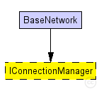
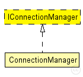

This documentation is released under the Creative Commons license
This documentation is released under the Creative Commons licenseGeneric ConnectionMananger interface definition.
The following diagram shows usage relationships between types. Unresolved types are missing from the diagram. Click here to see the full picture.
The following diagram shows inheritance relationships for this type. Unresolved types are missing from the diagram. Click here to see the full picture.
| Name | Type | Description |
|---|---|---|
| BaseNetwork | network | (no description) |
| Name | Type | Default value | Description |
|---|---|---|---|
| coreDebug | bool |
debug switch for core framework |
|
| sendDirect | bool |
send directly to the node or create separate gates for every connection |
|
| pMax | double |
maximum sending power used for this network [mW] |
|
| sat | double |
minimum signal attenuation threshold [dBm] |
|
| alpha | double |
minimum path loss coefficient |
|
| carrierFrequency | double |
minimum carrier frequency of the channel [Hz] |
// Generic ConnectionMananger interface definition. moduleinterface IConnectionManager { parameters: // debug switch for core framework bool coreDebug; // send directly to the node or create separate gates for every connection bool sendDirect; // maximum sending power used for this network [mW] double pMax @unit(mW); // minimum signal attenuation threshold [dBm] double sat @unit(dBm); // minimum path loss coefficient double alpha; // minimum carrier frequency of the channel [Hz] double carrierFrequency @unit(Hz); }
This documentation is released under the Creative Commons license